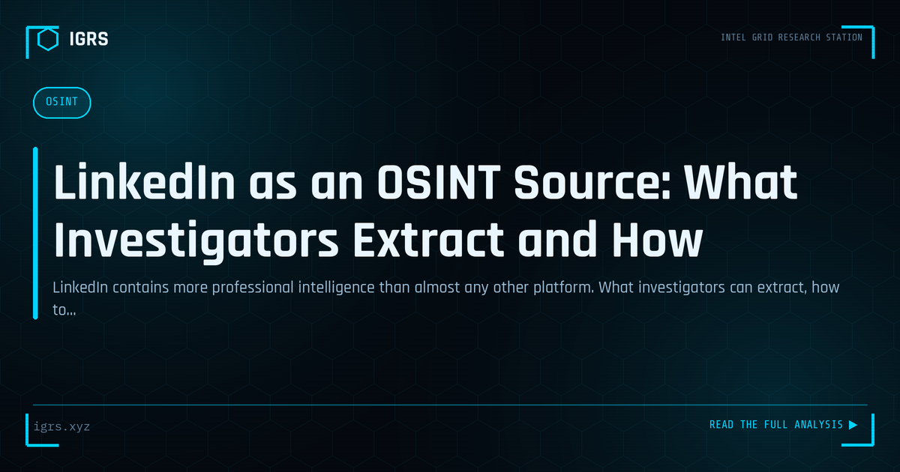

LinkedIn as an OSINT Source: What Investigators Extract and How
| File No. | IGRS-019/2026 |
| Subject | Professional OSINT methodology for LinkedIn investigation without violating ToS or law |
| Category | OSINT Fundamentals |
| Author | Manuj Kumar Pandey |
| Published | 2026-04-17 |
| Reading time | 12 minutes |
LinkedIn contains more professional intelligence than almost any other platform. What investigators can extract, how to do it lawfully, and what its limits are.
LinkedIn: The Professional Intelligence Goldmine
LinkedIn is the world's largest professional network, and that makes it an exceptional OSINT resource. For investigators conducting due diligence, verifying identities, mapping corporate relationships, or building profiles, LinkedIn offers a wealth of professional data that users willingly share. This guide covers the complete methodology for LinkedIn investigation, including its powerful uses and important limitations.
What LinkedIn Reveals
| Data | Investigative Value |
|---|---|
| Employment history | Career timeline, current and past roles |
| Education | Verifying credentials and background |
| Connections | Professional network and associates |
| Skills/endorsements | Expertise and who vouches for them |
| Activity/posts | Interests, opinions, behaviour |
| Company pages | Employees, structure, growth |
Verifying Professional Identity
A core use of LinkedIn investigation is verifying that a person is who they claim to be professionally. Cross-referencing claimed employment against the company's actual LinkedIn page and employee list, checking whether the role and tenure are consistent, and examining the profile's overall coherence reveals fabricated professional identities — common in fraud, fake recruitment, and social engineering.
Spotting Fake LinkedIn Profiles
Fake profiles are rampant on LinkedIn, used for scams, espionage, and reconnaissance. Indicators of a fake profile include:
- Very few connections, especially for a claimed senior role
- Recently created profile with sparse history
- A profile photo that reverse-image-searches to a stock photo or another person
- Generic or inconsistent job descriptions
- No genuine engagement or endorsements from real connections
- Education or employer that cannot be verified
Reverse Image Search on Profile Photos
Running a LinkedIn profile photo through reverse image search (Yandex, Google, TinEye) is one of the fastest ways to expose a fake. Fraudulent profiles frequently use stolen photos or AI-generated faces. A photo that appears on stock sites, belongs to a different named person, or returns no matches at all (suggesting AI generation) is a strong fake-profile signal.
Corporate Investigation via LinkedIn
LinkedIn is invaluable for investigating companies. The company page reveals employee count and growth, key personnel, and organisational structure. Employee profiles collectively map the organisation, reveal reporting relationships, and can expose connections between companies. For due diligence, this provides insight into whether a company has genuine operations and credible people, or is a shell with no real workforce.
The Anonymous Browsing Question
LinkedIn shows users who viewed their profile, which is a critical consideration for investigators. To avoid alerting a subject, investigators use private or anonymous browsing mode. However, this is a trade-off: anonymous viewing also limits what the investigator can see about who viewed them in return, and LinkedIn restricts some features in private mode. Understanding this balance is essential to avoid inadvertently tipping off a target.
Network and Connection Analysis
Analysing a subject's connections reveals their professional ecosystem — colleagues, business associates, and industry relationships. Mutual connections can establish links between people, and patterns in the network can reveal hidden relationships. For investigations into business relationships, fraud networks, or due diligence, connection analysis exposes associations that the subject may not have explicitly stated.
Activity and Content Analysis
A subject's posts, comments, and shared content reveal their interests, opinions, professional focus, and behaviour over time. Activity patterns can indicate genuine engagement versus a dormant or fake account. For profiling, this content provides insight into the person beyond their formal credentials, sometimes revealing information they did not intend to make significant.
Legal Process for LinkedIn Data
For authoritative account data beyond what is publicly visible, law enforcement can serve legal process on LinkedIn through its safety and legal process channels. This can provide registration details and account information under proper legal authority. As with all platforms, Section 94 BNSS provides the legal basis for such requests in India.
Legal and Ethical Boundaries
LinkedIn investigation must respect terms of service and the law. Viewing public profiles is permissible, but creating fake profiles to investigate violates LinkedIn's terms, and scraping at scale or accessing data beyond legitimate purpose can raise legal issues under the IT Act and DPDP Act. Professional investigators operate within these boundaries, using LinkedIn's legitimate features for documented, lawful purposes.
Building LinkedIn OSINT Skills
Effective LinkedIn investigation combines identity verification, fake-profile detection, corporate mapping, and network analysis, all conducted ethically and within platform rules. For Indian investigators conducting due diligence, fraud investigation, and background verification, LinkedIn is among the most productive OSINT sources — a vast, willingly-shared repository of professional data. Mastering its investigation, while understanding the anonymous-browsing trade-off and legal boundaries, adds a powerful capability to the OSINT toolkit.